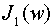

Theory of Fraunhofer Diffraction
(Rayleigh Resolution Criterion)
Consider two monochromatic point sources, which are very far from a thin lens.
The wavelength of the light from each source is  and the angular separation of the sources is
and the angular separation of the sources is  . The diameter and focal length of the lens are, respectively, D and f. In this module there is an observation screen in the back focal plane of the lens, and the irradiance in this plane, call it , is calculated and depicted on the screen.
. The diameter and focal length of the lens are, respectively, D and f. In this module there is an observation screen in the back focal plane of the lens, and the irradiance in this plane, call it , is calculated and depicted on the screen.
2. Calculations
Let us assume that the point sources are symmetrically position in angle about the optical axis of the lens. Since each point source is very far away from the lens, the irradiance at the face of the lens due to each point source will be approximately constant; for convenience we will set this irradiance equal to unity. The intensity on the observation screen is given by the formula
whereis the irradiance at the center of the diffraction pattern due to one point source (as if the other one were not there),
andIn the above equation,  is the Bessel function of the first kind of order one.

Created by Srihari" TARGET=EXTERNAL>Srihari Angaluri
and Kiril Vidimce
Send comments to comments@webtop.org